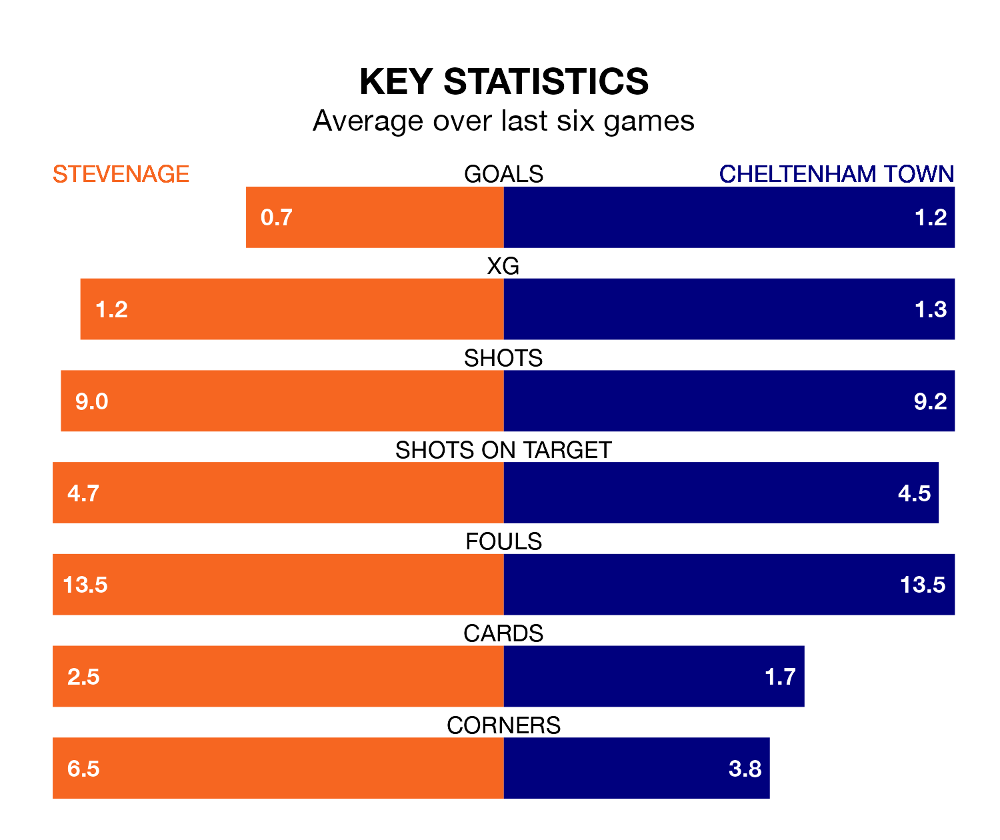

Struggling Cheltenham Town face Stevenage away at the Lamex Stadium on Saturday looking to build on a win in their last league outing.
After securing all three points with a 2-0 victory over Peterborough United on Tuesday, the Robins sit 21st in EFL League One.
They travel to play a Stevenage side ninth in the standings, who were held in their last match, 1-1 against Oxford United, on April 19.
In the last 10 years, Stevenage and Cheltenham have played each other on 10 occasions. Stevenage won six of them, Cheltenham two, and they drew twice.
On average, the Boro scored 1.7 goals and the Robins 0.8 in those matches.
Their last meeting was on September 23, when Stevenage won 3-0 away.
In Jamie Reid, Stevenage have one of the league's most on-form strikers so far this season. He has notched 18 goals in 42 appearances, to sit third in the scoring charts.
His goal rate of one every 190 minutes is quicker than that of Liam Sercombe, Cheltenham's top scorer with a goal every 297 minutes, and a total of 11 goals in 44 games.
With 40 goals in 45 games so far this season, Town are scoring at below the league average rate with 0.9 goals per game. And they are conceding more than average, letting in 63 goals at a rate of 1.4 per game.
The Boro are also below average scorers, with 1.2 goals per game, compared to a league average of 1.3. They have conceded 1.0 goal per game.
The home side are in disappointing form in EFL League One, with one win and three draws from their last six games.
With two wins and four losses over that period, the Robins' form is similar – they have both taken six points from 18.
Updated: 07:59 (UTC), 26/04/24